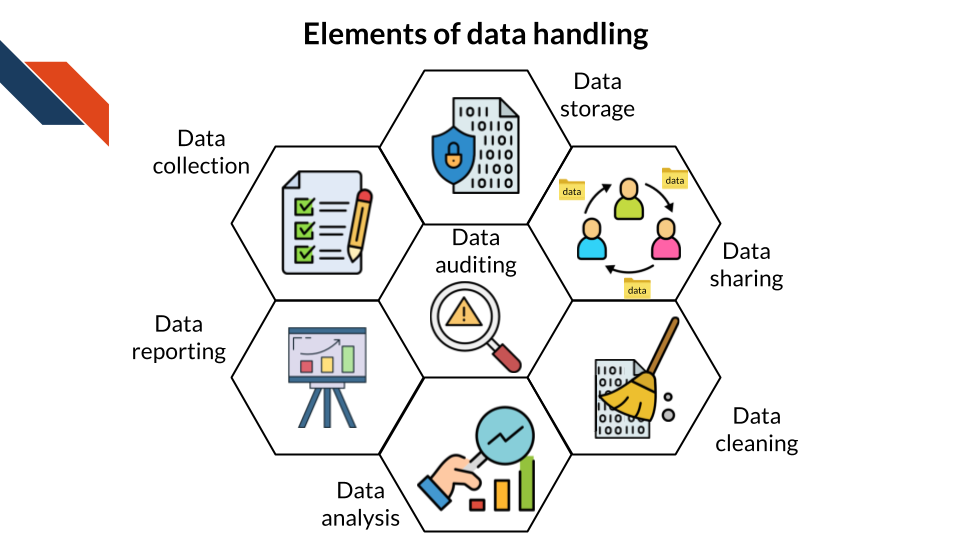

Chapter 7 Clinical Data Management

7.2 Clinical data handling tools
Clinical research relies heavily on the collection, processing, analysis, and management of data. Efficient and effective data handling is crucial to ensure the integrity, reliability, and validity of clinical trials and studies. Selecting the right tools for handling clinical data is a critical step in the research process. This section defines data handling in the context of clinical research and contrasts it with data quality, discusses the importance of privacy, provides a comprehensive guide on how to find suitable clinical data handling tools with a focus on open-source options, and emphasizes the importance of testing data handling methods using dummy data in the preliminary phases of a clinical trial.
7.2.1 Clinical data handling
Clinical data handling involves the processes and tools used to collect, manage, store, process, and share clinical data in a way that maintains its integrity, security, and usability. It encompasses a range of activities, including:
- Data Collection: Gathering data from various sources such as case report forms (CRFs), electronic health records (EHRs), patient surveys, and laboratory results.
- Data Storage and Management: Safely storing data in databases or data warehouses and managing access to ensure that only authorized personnel can interact with the data.
- Data Sharing: Providing access to data for collaborators, regulators, or stakeholders in a secure and controlled manner.
- Data Cleaning and Processing: Ensuring data consistency, accuracy, and completeness by detecting and rectifying errors, missing values, and inconsistencies.
- Data Analysis: Using statistical and analytical tools to generate insights from the data that can inform clinical decisions and study outcomes.
- Data Reporting: Generating reports that summarize findings.
- Data Auditing: Keeping track of all modifications to the data, as well as who made each change (Wright, Savonen, and Isaac 2025).
The goal of effective data handling is to ensure that data is accurate, reliable, and available when needed, while also protecting patient privacy and complying with regulatory standards.

7.2.1.1 Data quality vs data handling
Data quality and data handling are closely related but distinct concepts in clinical research.
- Data Quality: Refers to the accuracy, completeness, consistency, and reliability of data. High-quality data is essential for producing valid and reliable research outcomes. It involves processes such as data validation, error checking, and quality control measures.
- Data Handling: Encompasses the broader scope of managing the data lifecycle, from collection and storage to processing, analysis, and sharing. While data quality is a component of data handling, the latter also involves aspects like data security, access management, and regulatory compliance.
Both data quality and data handling are critical for ensuring the integrity of clinical research. Data handling tools must support high data quality standards through features like automated data validation checks, error reporting, and data cleaning functions.

7.2.2 Selecting clinical data handling tools
Choosing the right tools for clinical data handling depends on several factors, including the study’s size, complexity, data types, regulatory requirements, and budget. Clinical data studies will often utilize multiple tools (e.g., at least one for data collection and another for data analysis). Depending on what stage the study is in, researchers may not need to choose tools for all or certain aspects of the clinical data handling process, for example because data collection may have already occurred. Key considerations include:
- Compatibility and Integration: The tool should be compatible with existing data systems and workflows, allowing for seamless integration of data from multiple sources.
- Scalability: The tool should be able to handle the volume of data expected in the study and scale as the study progresses.
- User-Friendliness: A user-friendly interface can reduce the learning curve for researchers and data managers, improving efficiency and reducing errors.
- Regulatory Compliance: The tool should comply with relevant data privacy and security regulations to protect patient data.
- Support and Documentation: Adequate support, including user manuals, tutorials, and customer service, is essential for troubleshooting and maximizing the tool’s potential.
- Institutional Support: Your institution may have policies, regulations, or recommendations about which tools can be used—particularly when working with clinical data. Institutions often provide licenses or access to specific tools (for example, an institutional REDCap consortium membership), as well as varying levels of support through scientific staff, data offices, or training programs.
- Established Practices in the Field: Choosing tools that are widely used and accepted in your field is often a safe and effective option. Although newer or less common tools may offer advantages, using them may require additional justification to explain why they are suitable for your specific use case.
Research teams should conduct thorough evaluations, including reading reviews, seeking recommendations, and conducting pilot tests, to identify the best tool for their specific needs.
7.2.2.1 Open source options
Open-source tools provide a cost-effective and flexible alternative to proprietary software for handling clinical data. These tools are often developed and maintained by vibrant communities and can be customized to fit specific research needs.
Advantages of open-source tools include:
- They are typically free to use
- They provide transparency by allowing users to review the codebase for security and compliance
- They can be modified to meet unique requirements
- They often have strong community support, which can be valuable for troubleshooting and enhancing functionalities
Examples of popular open-source data handling tools include:
- REDCap: A secure, web-based application for building and managing online surveys and databases, widely used in clinical research for data collection and management. It is free to non-profit organizations who join the REDCap Consortium.
- OpenClinica: An open-source clinical trial software that supports data capture, management, and analysis, compliant with regulatory standards like FDA requirements for electronic data (FDA 21 CFR Part 11).
- KNIME: A data analytics, reporting, and integration platform that can be used for data cleaning, processing, and analysis, with extensive capabilities for machine learning and data visualization.
- R and Python: These programming languages offer powerful libraries and packages (such as the
tidyversefor R, andpandasandNumPyfor Python) that support a wide range of data handling and analysis tasks.
Each of these tools carries their own idiosyncratic pros and cons. For example, KNIME is a code-free analytical platform that may be ideal for students or new analysts to get comfortable with data processing and management. However, KNIME is not easily scalable, so it may not be ideal for large or multi-site projects. REDCap is a highly scalable and customizable survey and data collection platform, and has robust capability for data quality checks. While it offers some basic statistical and data visualization tools, and has APIs to allow for real-time analytics in other platforms (R, C#, cURL, etc.), it is not capable of advanced statistical modeling or more sophisticated analyses that are possible with R and Python. Additionally, REDCap licensing limits it to non-profit institutions (and other potentially limiting requirements), so this should be investigated before plans are made to use the environment. REDCap and R both allow for regulatory compliance. The FDA has issued guidance on using R for clinical trials (The R Foundation for Statistical Computing 2026). REDCap can be configured to support compliance with the FDA 21 CFR Part 11, HIPAA, and GDPR.
While open-source tools are beneficial, it is essential to ensure they are secure, well-maintained, and compliant with relevant privacy and regulatory standards.
When moving between multiple data handling tools, it is important to consider interoperability. As an example, REDCap and R play very nicely together via API tokens, but this may not be true of all electronic data capture systems or databases. The sharing, integration and redistribution of data between systems - whether internally or externally - needs to be carefully planned, tested, and documented.
7.2.3 Testing data handling tools
Before implementing data handling methods in an actual clinical trial, it is crucial to run tests using dummy data. This step ensures that the data handling process is robust, efficient, and free from errors across different conditions, without risking sensitive patient information.
- Creating Realistic Dummy Data: Dummy data should mimic the real data in terms of format, structure, and complexity. It should include various scenarios (e.g., missing data, outliers, data entry errors) to test the system’s error-handling capabilities.
- Simulating the Full Data Handling Workflow: The process should involve every stage of data handling, from data collection and entry to storage, cleaning, analysis, and reporting. This comprehensive simulation helps identify potential issues early, such as data loss, security vulnerabilities, or errors in data processing algorithms.
- Refining and Optimizing Data Handling Methods: Based on the findings from dummy data tests, researchers can refine their data handling protocols, such as their survey instruments or case report forms, adjust tools and settings, and optimize workflows to ensure smooth operations when real data is introduced.
Testing with dummy data provides an additional layer of quality assurance and helps build confidence in the data handling process before the clinical trial begins.
7.2.3.1 How to Generate Dummy Data
There are several ways to simulate data to use for testing.
- Write a script that uses a probabilistic modeling framework to create a dataset with values that mimic what you expect to find. There are also R packages that can help with this task, such as
simstudy(Goldfeld and Wujciak-Jens 2020). After you simulate data, can also remove data or add errors that might occur in your real data collection process. - If you are using a case report form to collect data, you could answer questions several times to create a dataset, and then continue through the data handling pipeline.
- In some scenarios, you could start with a real dataset that is publicly available and de-identified, then either directly use that data or modify it for your purposes. You could remove observations to create missing data or purposely include errors that might occur in your data generation process.
7.2.4 Conclusion
Effective clinical data handling is fundamental to the success of clinical trials and studies. Selecting the right tools requires careful consideration of privacy, regulatory compliance, open-source versus proprietary options, and the specific needs of the study. Understanding the difference between data quality and data handling is crucial, as both are essential for ensuring the validity and reliability of research outcomes. Running preliminary tests using dummy data is a critical step in validating data handling methods, ensuring that the chosen tools and processes are robust, secure, and efficient. By following these guidelines, researchers can enhance data management practices, protect patient privacy, and achieve meaningful and reliable clinical research outcomes.
7.3 Privacy considerations for clinical data
Privacy is a fundamental consideration in clinical data management, given the sensitive nature of the information involved. Clinical data often contains personally identifiable information (PII) or personal health information (PHI), which must be protected to comply with privacy regulations such as the Health Insurance Portability and Accountability Act (HIPAA) in the United States (U.S. Department of Health and Human Services n.d.), the General Data Protection Regulation (GDPR) in the European Union (GDPR.eu n.d.), and other regional laws. More information about PII and PHI can be found in this course about ethical data handling (Wright, Savonen, and Isaac 2025).
When selecting data handling tools, it is crucial to prioritize those that offer comprehensive privacy features to safeguard sensitive information and maintain public trust in clinical research.
- Data Anonymization and De-identification: One of the primary methods to protect privacy is to anonymize or de-identify data, removing or encrypting any information that could directly or indirectly identify an individual.
- Privacy-Preserving Record Linkages: In scenarios where data from multiple sources need to be linked without compromising individual privacy, privacy-preserving record linkage techniques are essential. These methods enable the integration of datasets by matching records in a way that minimizes the risk of re-identification. Techniques such as secure multi-party computation, homomorphic encryption, and differential privacy can be employed to ensure that the linkage process itself does not expose sensitive information.
- Access Control and Encryption: Tools should support robust access controls, ensuring that only authorized users have access to the data. Encryption should be used for both data at rest and data in transit to prevent unauthorized access.
- Compliance and Auditing: Tools should facilitate compliance with regulatory standards and provide auditing capabilities to track data access and usage.
7.4 Government regulators
Clinical data is governed by several different types of regulations. In this section, we will review some of the major regulatory frameworks and organizations.
7.4.1 Health Insurance Portability and Accountability Act (HIPAA)
The Health Insurance Portability and Accountability Act (HIPAA), regulated by the U.S. Department of Health and Human Services (HHS), establishes national standards to protect individuals’ medical records and other personal health information (U.S. Department of Health and Human Services n.d.). It applies to health plans, healthcare clearinghouses, and healthcare providers that conduct certain healthcare transactions electronically. The HIPAA Privacy Rule requires appropriate safeguards to protect the privacy of protected health information (PHI) and sets limits on the uses and disclosures of such information without patient authorization.
7.4.2 Food and Drug Administration (FDA)
The U.S. Food and Drug Administration (FDA) regulates the safety, efficacy, and security of human and veterinary drugs, biological products, medical devices, food, cosmetics, and products that emit radiation (U.S. Food & Drug Administration n.d.). The FDA’s regulations ensure that clinical trials are conducted ethically and that data collected is reliable and accurate. This includes oversight of clinical trial protocols, informed consent, and reporting of adverse events.
7.4.3 General Data Protection Regulation (GDPR)
The General Data Protection Regulation (GDPR), governed by the European Union (EU), is a comprehensive data protection law that governs the collection, processing, storage, and transfer of personal data within the EU (GDPR.eu n.d.). It aims to enhance individuals’ control over their personal data and simplify the regulatory environment for international business. GDPR applies to any organization that processes the personal data of EU residents, regardless of where the organization is based. Key provisions include the right to be forgotten, data portability, and mandatory breach notifications.
7.4.4 Honest brokers
Honest brokers act as neutral intermediaries between the data source and researchers, typically regulated by Institutional Review Boards (IRBs) or equivalent bodies. They are responsible for de-identifying data to ensure that researchers cannot trace the data back to individual patients. Honest brokers must complete specific training, such as Collaborative Institutional Training Initiative (CITI) Research Ethics and HIPAA training, before accessing data. They play a crucial role in maintaining the confidentiality and integrity of clinical data.
7.5 Documentation
In data management, several types of documentation are frequently encountered, each serving a specific purpose throughout the lifecycle of a research project. These documents are crucial for ensuring data integrity, regulatory compliance, and effective project management.
7.5.1 Data Management Plan
A Data Management Plan (DMP) outlines how data will be handled during and after a research project. Typically created at the beginning of a project, it is stored in project documentation repositories or institutional databases. Often required by funding agencies, a DMP may include plans for testing with dummy data to ensure data integrity. The importance of a DMP lies in its role in planning and managing data throughout the project, ensuring that data is handled consistently and responsibly (Tableau n.d.).
7.5.2 Statistical Analysis Plan
The Statistical Analysis Plan (SAP) details the statistical methods and analyses to be performed on the collected data. Developed before data analysis begins, it is stored with project documentation or in electronic lab notebooks. Essential for clinical trials and other research requiring rigorous statistical analysis, the SAP may involve testing statistical methods on dummy data. The SAP is crucial for maintaining the integrity and reproducibility of statistical analyses (QuestionPro n.d.).
7.5.3 Standard Operating Procedures
Standard Operating Procedures (SOPs) provide detailed instructions on how to perform specific tasks or processes. Used throughout the project lifecycle, they are stored in organizational repositories or document management systems. SOPs are often required for regulatory compliance and may include procedures for testing with dummy data. The importance of SOPs lies in their ability to standardize processes, ensuring consistency and compliance with regulatory requirements (Qualitative Data Repository n.d.).
7.5.4 Data Use Agreements
Data Use Agreements (DUAs) define the terms and conditions for data sharing and use. Encountered before data is shared with external parties, they are stored in legal or administrative offices. DUAs are required when sharing data with external collaborators but are typically not directly related to dummy data. DUAs are important for protecting data privacy and ensuring that data is used appropriately (IBM n.d.).
7.5.5 Data Sharing Agreements
Data Sharing Agreements (DSAs) specify the terms for sharing data between organizations. Encountered prior to data sharing, they are stored in legal or administrative offices. DSAs are necessary for formalizing data sharing arrangements and generally do not relate to dummy data. The importance of DSAs lies in their role in facilitating collaboration while protecting data integrity and compliance with legal requirements (Winks 2024).
7.5.6 Documentation across the span of a project
These documents are encountered at various stages of a project, from planning (DMP, SAP) to execution (SOP) and data sharing (DUA, DSA). They are typically stored in project documentation repositories, institutional databases, or document management systems, with access restricted to authorized personnel. Not all documents are required for every project; their necessity depends on the project’s scope, regulatory requirements, and institutional policies. Some documents, like the DMP, SAP, and SOP, may include provisions for testing with dummy data to ensure data integrity and validate processes.
To ensure compliance with these documents, organizations should implement robust data governance frameworks that include regular audits, training programs, and clear policies and procedures (Teamhub 2023). Standardized templates for these documents are often available from funding agencies, regulatory bodies, or institutional guidelines, helping to ensure consistency and compliance with best practices. It’s best to ask before starting any document to ensure the correct format is used.
For more information about documentation, consider the following resources:
- Guide to Clinical Data Management (GCDMP) (Society for Clinical Data Management n.d.)
- Writing and Managing SOPs for GCP (Prokscha 2016) and Practical Guide to Clinical Data Management (Prokscha 2024)
Additionally, remember the insightful quote by Damian Conway: “Documentation is a love letter that you write to your future self” (Conway 2005). This is an invaluable tidbit to keep in mind throughout the lifecycle of a study.
7.6 Summary
Clinical data handling includes the processes and tools used to collect, store, process, analyze, and share clinical data. There are a variety of tools available for clinical data handling, including many open-source tools. The right tools for a project depends on existing systems, regulatory compliance, who is using the tools, and what support is included from the tool’s developers and from the user’s institution. It is important to test clinical handling tools and pipelines using dummy data before using them with actual clinical data.
Privacy is an important consideration for clinical data, because of the personally identifiable information (PII) and personal health information (PHI) that is often included in clinical data. It is essential to keep sensitive information secure, and to only allow access to approved researchers. Data should only be shared more widely if that has been approved and if it is de-identified.
There are several regulators that govern the collection, storage, use, and sharing of clinical data. Relevant regulations include the Health Insurance Portability and Accountability Act (HIPPA) and regulations from the Food and Drug Administration (FDA) in the United States, the General Data Protection Regulation (GDPR) in the European Union, and honest brokers that connect data sources and researchers.
Documentation is an important part of clinical data management, in order to ensure proper data management throughout the course of a project. A Data Management Plan (DMP) outlined how data will be handled over the course of a project, a Statistical Analysis Plan (SAP) details the analyses to be performed on the data, a Standard Operating Procedures (SOP) provides instructions for performing tasks, a Data Use Agreement (DUA) defines the conditions for data use and sharing with external parties, and a Data Sharing Agreement (DSA) defines the conditions for sharing data between organizations.